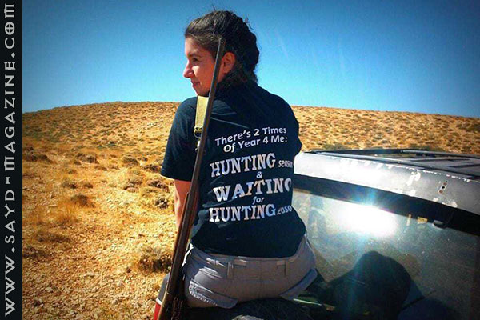
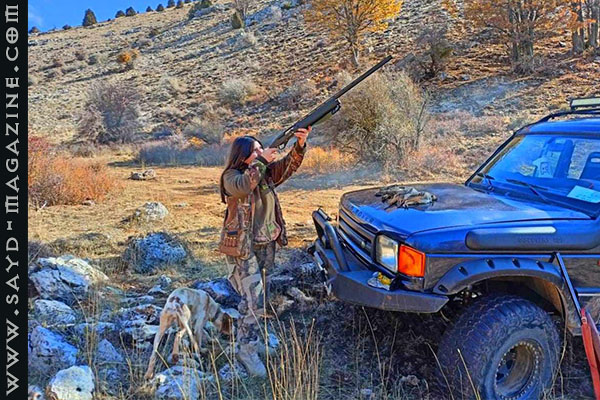
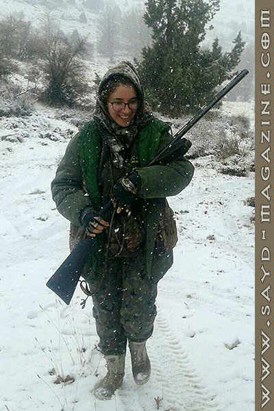

مهندسة زراعية برتبة صيادة مسؤولة، تعشق الطبيعة وحضورها يمنع التلوث...
ووعيها لقيمة الحياة البرّية وعالم الطيور، جعلها تمارس صيدها بأخلاق عالية بعيدًا عن نهج صيادي الليل،
الذين يبحثون عن طريدة وسط الظلام كاللصوص، فهي بكل أنوثتها تسير وراء طريدتها بكل أناقة التحدّي ولا تجلس لتنتظرها بطريقة خداع.
سارة عقيقي صيادة من لبنان
تدرَّبت على الصيد في الثانية عشر من عمرها على يد والدها، الذي تعتبره شريك رحلات صيدها الأوّل،
وعلاقتها بالصيد علاقة عميقة وأهم من "أكلة عصافير"
كان لـ"صيد" معها هذه المقابلة..
مِمّا قالت:
* بدأت الصيد ببندقية ضغط الهواء ثم بندقية 12 رفيع، والآن أصطاد ببندقية أتوماتيك.
* في أول تجربة لي للرمي أصبت الهدف "بالخردقة" فقلت لنفسي لِمَ لا أُتابع؟! وهكذا حتى صرت أُصيب "الكردون"، وصرت أذهب مع أبي إلى الصيد، وكنت أصحو قبله وأوقظه.
* عشقي للطبيعة والهدوء قادني إلى الصيد، ولهذا حتى لو كنا أكثر من صياد، أترك الجميع وأذهب لأمشي وحدي.
 * في بداية صيدي لم أكن أتذوَّق العصافير لكنني فعلتها لاحقًا، ولكني لا آكل سوى كمية قليلة.
* في بداية صيدي لم أكن أتذوَّق العصافير لكنني فعلتها لاحقًا، ولكني لا آكل سوى كمية قليلة.
* تختلف ردّات الفعل عند الشباب تجاهي كصيادة، فغير الصيادين يستغربون.. أما الصيادين فيفرحون ويسألونني بالتفاصيل عن عتادي وسلاحي وأماكن الصيد المفضلة.

* معظم الصيادين الذكور يهمّهم استعراض عضلاتهم في القنص، والتباهي بعدد الطرائد المقتولة ولا يهتمون بتصوير الطبيعة، ولهذا لا يعطون الطبيعة حقها في إظهار جمالها.
* أجمل رحلات صيدي تكون مع أبي رفيقي وشريكي الأوّل في الصيد، ويرافقنا خطيبي حين يسمح الوقت له.
* رحلة الصيد يجب ألا تتعدى الثلاث أشخاص، وإلاّ تصبح نزهة بريّة.
* الصيد بالشباك يدمّر الصيد ويجب أن يعمل كل الصيادين على التوعية من خطورة هذه الطرق الغير شرعية.
* صيد الليل حسّاس جدًّا بالنسبة لي، إنّه مزيج من عنف وإجرام وإبادة، فهذه ليست هواية صيد، إنّما خداع و"تجميع لحم". فالصيد هو أنت تتبع الطريدة بكل عزم وقوة ولا تنتظرها لتأتي إليك بطريقة الخداع .

* ببداياتي في الصيد كنت أذهب وأصطاد في الربيع، ولكن بعد اطلاعي وقراءاتي ومعرفتي أكثر بعالم الطيور، توقّفت عن الصيد في الربيع، ورحتُ أُحذّر جميع من حولي عن خطورة هذا الصيد على الهواية.
* منذ سنوات حين كان صيد الحجل مسموحًا في لائحة الطرائد، كنت مع أبي في السيارة عائدين من الصيد ورأيت "رفّ حجال"، فقال أبي: "عدّي وقوّصي". فقمت بالعد من الواحد إلى الستة وقلت له: "ستّ حجال" وضحكت، فردّ بإنفعال صيّادٍ خسر طريدة: "ليش ما قوّصتي"، فقلت له: "لأوّل مرّة بشوف رفّ حجال، وحَبَّيت شوف كيف طايرين"، فضحك ضحكة ناقصة وقال: "تاني مرّة بتعدّي للقوّاص مش بتعدّي طيور". وظلت هذه الحادثة الطريفة تلاحقني حتى اليوم.
* كل رحلة صيد لا تخلو من الخطورة كما في كل شيء في الحياة، ولهذا على الشخص أن ينتبه لمعايير السلامة في أي عمل يقوم به.
* في الخارج لا تفقد المرأة أنوثتها إذا مارست الصيد، لماذا عندنا يجب أن ننظر إليها كأنها "مسترجلة"؟ بالعكس فالمرأة صيادة منذ الأزل في كل المجتمعات.
* لا يهمّني أن أُنافس أحدًا في الصيد، أنا اصطاد بهدف التواصل مع الطبيعة وهذه مُتعتي.
* بعض الفتيات يتصوّرن بهدف نشر الصور وجمع اللايكات.
* كل ما يتعلّق بالطبيعة هو من هواياتي: المشي والقيادة خارج المسار، وأنا درست الهندسة الزراعية في الأساس لأنني أُحبّ الطبيعة.

* أنا أطارد الأصحاب بالكلام عن ضرورة عدم رمي النفايات على الأرض، وعدم ترك النار دون التأكد من إطفائها.
* الصيّادات أحرَص من الصيّادين على عدم الإساءة للطبيعة وتلويثها.
* ليس هناك إلمام كبير للفتيات في موضوع الصيد.
* أحب تجربة صيد الغزلان والفيزون والصيد بالقوس والسهم فهذه تحدّيات جديدة بالنسبة لي.
* أُحبّ الصيد في عيون السيمان وجرد العاقورة، لم أسافر بعد للصيد، ولكنني أُحبّ هذه التجربة خصوصًا الصيد في رومانيا.
شكرًا مجلة "صيد" على الاهتمام بالصيد المسؤول الذي يحمينا ويحمي الهواية والطبيعة.